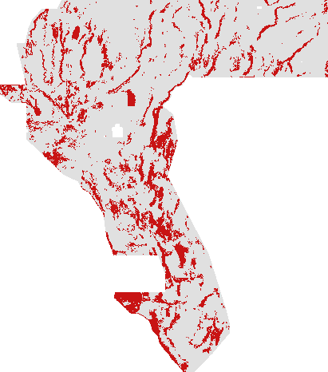

GT2 HOLDOUT-DTI, per-fold DTI, note, SHA-256 (not leaderboard scores) — portal error guidance below
Evaluator gems-segment-pooled-v1 (60,988 withheld positives, 1.5 km collar, 10 km block bootstrap 1,999 draws, pooled TPw/FPw/FNw before ratio): GT2 HOLDOUT-DTI 0.14467 (95% CI [0.13067, 0.15882], TPw 8,282.6 FPw 34,033.3) vs. reconstructed OOF baseline 0.13000 ([0.11565, 0.14396], paired Δ +0.01467) and SAHG1 0.09672 (Δ +0.04795). Per-fold DTI: NW 0.1420, NE_LidarGapHeavy 0.1891, SW 0.1101, SE 0.1525. Prospective surface check pass, but final-dot 3-px overlap 0.758 > 0.70 vs registry-006 (GEMSDOE27 edge-coherence-plus-t) → duplicate-flagged; literal lattice 0.993 (synthetic spacing-5 covers 99.87% — expected). Requires selector adjudication, full C2ST nuisance audit, and weekly-cap check before any slot.
24GEMS GT2 HGB+thermal 37722 dots HOLDOUT 0.1447 vs oof 0.1300 dup-flagged | id 658220e55504
SHA-256 9b3f627dd7c81f6d56ba39129615c5aff9fe02ef3ea6e69021b0c735c26e15bb · NaN-twin SHA-256 c7580f4f265c64507ff06cd769a509e28faeab86de9b572fcfa2482f976743f6 · 37,722 dots · F2m 0.72 mean
Portal tip: If the portal says “Predicted values must be in range [0,1]”, upload the -zeros.tif (all-finite, whole-array [0,1] pass); the -nan.tif has NaN outside (official text) and fails the strict whole-array validator, though both are format-valid in-footprint. Neither has out-of-range or NaN-inside pixels.

GT2 preview · 8× downsampled · footprint gray, dots red · 37,722 dots